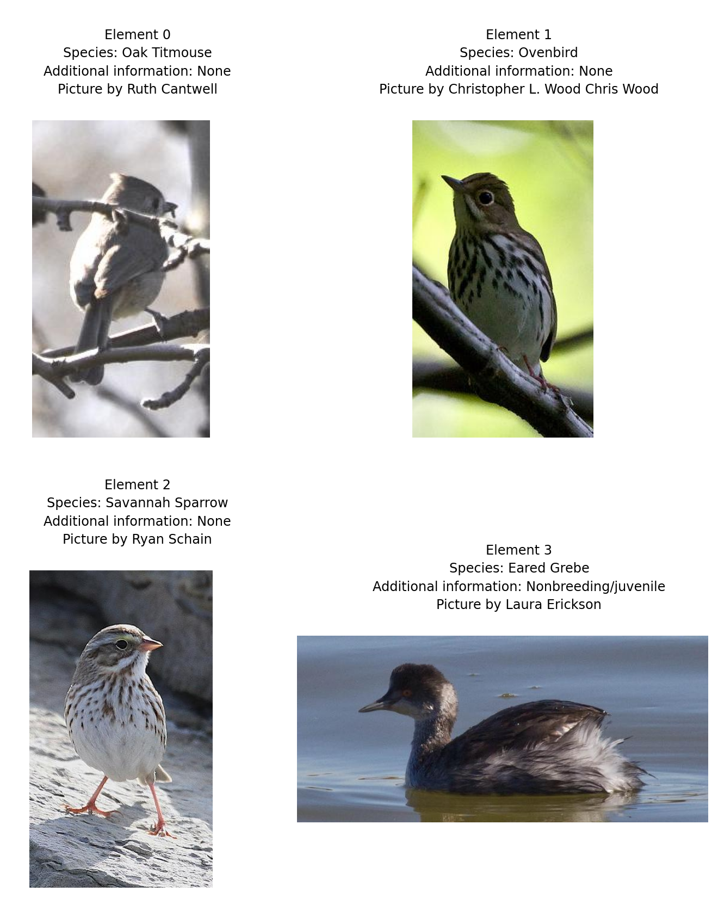

import polars as pl
metadata = pl.read_parquet("metadata.parquet")Data preprocessing
Training DataFrame
base_dir = "<path-of-the-nabirds-dir>"To be replaced by actual path.
Now we can get a subset of our metadata DataFrame with the training metadata only:
metadata_train = metadata.filter(pl.col("is_training_img") == 1)Quick sanity checks:
print(metadata_train.shape)
print(metadata_train.row(0))
print(metadata_train.columns)(23929, 12)
('0001afd4-99a1-4a67-b940-d419413e23b3', 307, 179, 492, 224, 645, 'Eared_Grebe_(Nonbreeding/juvenile)', '0645/0001afd499a14a67b940d419413e23b3.jpg', 'Laura_Erickson', 1024, 680, 1)
['UUID', 'bb_x', 'bb_y', 'bb_width', 'bb_height', 'class', 'id', 'path', 'photographer', 'img_width', 'img_height', 'is_training_img']Read in images
To read in the images, there are many options, including:
- PIL.Image.open from Pillow,
cv2.imreadfrom OpenCV,- skimage.io.imread from scikit-image.
Here, we are using imageio.imread from imageio which is an excellent option because it automatically creates a NumPy ndarrays, choosing a dtype based on the image, and it is faster than other options (scikit-image actually uses it now instead of their own implementation).
Initial Dataset class
import os
import imageio.v3 as iio
class NABirdsDatasetInitial:
"""NABirds dataset class."""
def __init__(self, metadata_file, data_dir):
self.metadata = metadata_file
self.data_dir = data_dir
def __len__(self):
return len(self.metadata)
def __getitem__(self, idx):
img_path = os.path.join(
self.data_dir,
self.metadata.get_column('path')[idx]
)
img = iio.imread(img_path)
img_id = self.metadata.get_column('id')[idx].replace('_', ' ')
img_photographer = self.metadata.get_column('photographer')[idx].replace('_', ' ')
img_bb_x = self.metadata.get_column('bb_x')[idx]
img_bb_y = self.metadata.get_column('bb_y')[idx]
img_bb_width = self.metadata.get_column('bb_width')[idx]
img_bb_height = self.metadata.get_column('bb_height')[idx]
element = {
'image': img,
'id': img_id,
'photographer': img_photographer,
'bbx' : img_bb_x,
'bby' : img_bb_y,
'bbwidth' : img_bb_width,
'bbheight' : img_bb_height
}
return elementInstantiate our class
img_dir = os.path.join(base_dir, "images")
nabirds_train_initial = NABirdsDatasetInitial(
metadata_train,
img_dir
)Print an element
next(iter(nabirds_train_initial)){'image': array([[[ 99, 119, 143],
[102, 122, 146],
[104, 124, 148],
...,
[105, 116, 136],
[106, 117, 137],
[106, 117, 137]],
[[102, 122, 146],
[101, 121, 145],
[100, 120, 144],
...,
[101, 112, 132],
[101, 112, 132],
[102, 113, 133]],
[[106, 124, 148],
[104, 122, 146],
[102, 120, 144],
...,
[ 99, 110, 130],
[ 99, 110, 130],
[101, 112, 132]],
...,
[[112, 129, 159],
[115, 132, 162],
[116, 133, 163],
...,
[102, 109, 127],
[101, 108, 126],
[ 97, 104, 122]],
[[115, 132, 162],
[117, 134, 164],
[118, 135, 165],
...,
[ 98, 105, 123],
[101, 108, 126],
[101, 108, 126]],
[[116, 133, 163],
[117, 134, 164],
[118, 135, 165],
...,
[ 98, 105, 123],
[102, 109, 127],
[101, 108, 126]]], shape=(680, 1024, 3), dtype=uint8),
'id': 'Eared Grebe (Nonbreeding/juvenile)',
'photographer': 'Laura Erickson',
'bbx': 307,
'bby': 179,
'bbwidth': 492,
'bbheight': 224}Note the image values between 0 and 255.
Display a sample of data
Let’s display the first 4 images and their bounding boxes:
import matplotlib.pyplot as plt
import matplotlib.patches as patches
fig = plt.figure(figsize=(8, 8))
for i, element in enumerate(nabirds_train_initial):
ax = plt.subplot(2, 2, i + 1)
plt.tight_layout()
ax.set_title(
f'Element {i}\nIdentification: {element['id']}\nPicture by {element['photographer']}',
fontsize=9
)
ax.axis('off')
plt.imshow(element['image'])
rect = patches.Rectangle(
(element['bbx'], element['bby']),
element['bbwidth'],
element['bbheight'],
linewidth=1,
edgecolor='r',
facecolor='none'
)
ax.add_patch(rect)
if i == 3:
plt.show()
break
Print info on a sample of data
for i, element in enumerate(nabirds_train_initial):
print(f'Image dimensions: {element['image'].shape}, data type: {element['image'].dtype}'
)
if i == 3:
breakImage dimensions: (680, 1024, 3), data type: uint8
Image dimensions: (819, 1024, 3), data type: uint8
Image dimensions: (768, 1024, 3), data type: uint8
Image dimensions: (817, 1024, 3), data type: uint8Notice how the images are all of different sizes. This is a problem. We are also not making use of the bounding boxes this dataset comes with, hence using parts of images we know do not contain any bird unnecessarily.
We will address these problems in the next section.
Needed transformations
Raw data seldom works without being transformed.
We should get rid of the parts of the images that are outside of the bounding boxes containing the birds.
Also, a neural network will need images of the same size and our images come in all sorts of sizes.
What size to chose? xxx
Cleaning Dataset class
import imageio.v3 as iio
from skimage.transform import resize
import numpy as np
class CleaningDataset:
"""Cleaning dataset class."""
def __init__(self, metadata_file, source_dir, target_dir, target_size=(224, 224)):
self.metadata_file = metadata_file
self.source_dir = source_dir
self.target_dir = target_dir
self.target_size = target_size
def __len__(self):
return len(self.metadata_file)
def __getitem__(self, idx):
"""Returns (processed_img_array, save_path)"""
# Build paths
read_path = os.path.join(
self.source_dir,
self.metadata_file.get_column('path')[idx]
)
save_path = os.path.join(
self.target_dir,
self.metadata_file.get_column('path')[idx]
)
# Load image
try:
img = iio.imread(read_path)
except Exception as e:
print(f"Error loading {filename}: {e}")
return None, None
# If a file has an alpha channel, drop it
1 if img.shape[2] == 4:
img = img[:,:,:3]
# Get metadata
id = self.metadata_file.get_column('id')[idx].replace('_', ' ')
photographer = self.metadata_file.get_column('photographer')[idx].replace('_', ' ')
# Get bounding box data
bbx = self.metadata_file.get_column('bb_x')[idx]
bby = self.metadata_file.get_column('bb_y')[idx]
bbw = self.metadata_file.get_column('bb_width')[idx]
bbh = self.metadata_file.get_column('bb_height')[idx]
# Crop image
img_cropped = img[bby:bby+bbh, bbx:bbx+bbw]
# Resize img to target size with padding to avoid distortion
h, w, _ = img_cropped.shape
target_h, target_w = self.target_size
# Calculate the scaling factor to fit the image inside the box
scale = min(target_h / h, target_w / w)
# Calculate the new dimensions of the image
new_h, new_w = int(h * scale), int(w * scale)
# Resize
img_resized = resize(img_cropped, (new_h, new_w), anti_aliasing=True)
# Create a black canvas (zeros) of the target size
out_img = np.zeros((target_h, target_w, img.shape[2]), dtype=img_resized.dtype)
# Place the resized image in the center of the canvas
y_offset = (target_h - new_h) // 2
x_offset = (target_w - new_w) // 2
out_img[y_offset:y_offset+new_h, x_offset:x_offset+new_w] = img_resized
# Convert back to uint8 (0-255)
2 final_img = (out_img * 255).astype(np.uint8)
return final_img, save_path- 1
- xxx
- 2
-
skimagereturns elements with adtype(float64)(values from 0 to 1), but we want to save space on disk.
Create the clean data in parallel
Built-in multiprocessing in Python can be done with either of the ProcessPoolExecutor class from the concurrent.futures module or the Pool class from the multiprocessing package.
Let’s use the first one:
from concurrent.futures import ProcessPoolExecutor
from tqdm import tqdm # to display a progress barLet’s instantiate our CleaningDataset:
cleaned_img_dir = os.path.join(base_dir, "cleaned_images")
dataset_to_clean = CleaningDataset(
metadata_file=metadata_train,
source_dir=img_dir,
target_dir=cleaned_img_dir
)We can now create a helper function:
def process_idx(i):
"""Helper function for the parallel worker."""
img, path = dataset_to_clean[i]
if img is not None:
# Create target directory if it doesn't exist
os.makedirs(os.path.dirname(path), exist_ok=True)
# Save cleaned image
iio.imwrite(path, img)
return 1 # Success
return 0 # FailureAnd run it in parallel:
# Use as many workers as you have CPU cores
with ProcessPoolExecutor() as executor:
# Map indices to the process function
results = list(tqdm(
executor.map(process_idx, range(len(dataset_to_clean))),
total=len(dataset_to_clean),
desc="Cleaning Images"
))
print(f"Done. {sum(results)} images processed.")Done. 23929 images processed.You can watch the parallel work live with an application such as htop (on your machine or the cluster) or btop (on your machine).
Here is a screenshot I took from btop on my machine while creating the cleaned images. You can see that my 16 cores are working in parallel:

New Dataset class
class NABirdsDataset:
"""NABirds dataset class."""
def __init__(self, metadata_file, data_dir):
self.metadata_file = metadata_file
self.data_dir = data_dir
def __len__(self):
return len(self.metadata_file)
def __getitem__(self, idx):
path = os.path.join(
self.data_dir,
self.metadata_file.get_column('path')[idx]
)
img = iio.imread(path)
id = self.metadata_file.get_column('id')[idx].replace('_', ' ')
photographer = self.metadata_file.get_column('photographer')[idx].replace('_', ' ')
element = {
'image': img,
'id': id,
'photographer': photographer,
}
return elementInstantiate
Now we can instantiate the new class with the new data:
nabirds_train = NABirdsDataset(
metadata_train,
cleaned_img_dir
)Print info on a sample
for i, element in enumerate(nabirds_train):
print(f'Image new dimensions: {element['image'].shape}, data type: {element['image'].dtype}'
)
if i == 3:
breakImage new dimensions: (224, 224, 3), data type: uint8
Image new dimensions: (224, 224, 3), data type: uint8
Image new dimensions: (224, 224, 3), data type: uint8
Image new dimensions: (224, 224, 3), data type: uint8Notice how images are all of width and height 224 now.
Display a sample
Let’s display the first 4 cleaned images to make sure they look like what we expect:
fig = plt.figure(figsize=(8, 8))
for i, element in enumerate(nabirds_train):
ax = plt.subplot(2, 2, i + 1)
plt.tight_layout()
ax.set_title(
f'Element {i}\nIdentification: {element['id']}\nPicture by {element['photographer']}',
fontsize=9
)
ax.axis('off')
plt.imshow(element['image'])
if i == 3:
plt.show()
break